| Établissement simulé | Le Palace — Alger (4 étoiles) |
|---|---|
| Plateforme | Flutter / Dart, base SQLite embarquée |
| Profils utilisateurs | Administrateur, Réceptionniste, Client |
| Contexte | Projet WorldSkills Algérie |
Hotel Smart a été développée dans le cadre d'une épreuve de l'Olympiade WorldSkills Algérie, avec pour mission de concevoir en trois jours une application mobile Flutter complète de gestion hôtelière pour un établissement fictif, Le Palace (4 étoiles, Alger).
| Profil | Accès |
|---|---|
| Administrateur | Gestion complète : utilisateurs, chambres, statistiques, tableau de bord |
| Réceptionniste | Gestion opérationnelle : chambres, réservations, clients, paiements, check-in/out |
| Client | Consultation uniquement : ses propres réservations et son profil |
Dart / Flutter, base de données locale SQLite (sqflite),
intégration d'une API REST externe (nationalités), gestion d'état avec
provider, Material Design 3, versioning Git avec un commit
par partie terminée.
L'application suit une architecture en couches stricte, qui sépare l'interface, l'état observable et l'accès aux données : chaque couche ne connaît que celle immédiatement en dessous, ce qui permet de tester la logique métier indépendamment de l'UI et de faire évoluer une couche sans toucher aux autres.
UI (screens/widgets)
-> Providers (ChangeNotifier) : état observable par l'UI
-> Services : logique métier (peut combiner plusieurs repositories)
-> Repositories : un par table SQLite, CRUD brut
-> DatabaseHelper : Singleton, ouverture/création de la base
provider/ChangeNotifier)
imposés par le cahier des charges : état simple à observer depuis les
écrans, sans boilerplate excessif pour la taille du projet.Cette structure se retrouve à l'identique dans l'arborescence du code
(models/, services/, repositories/,
providers/, screens/...) — voir le chapitre 13
pour le détail complet.
Aperçu visuel des fonctionnalités les plus représentatives de l'application — le détail de chacune est couvert dans le guide d'utilisation (Partie I).
Identité de marque premium — thème bleu nuit / or, typographie Playfair Display / Manrope et motif Art Déco, cohérents sur tout l'écran de connexion.
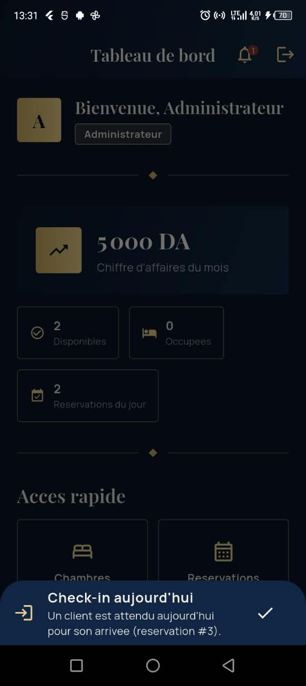
Tableau de bord dynamique — statistiques calculées en temps réel et notifications de check-in/check-out du jour, sans quitter l'écran d'accueil.
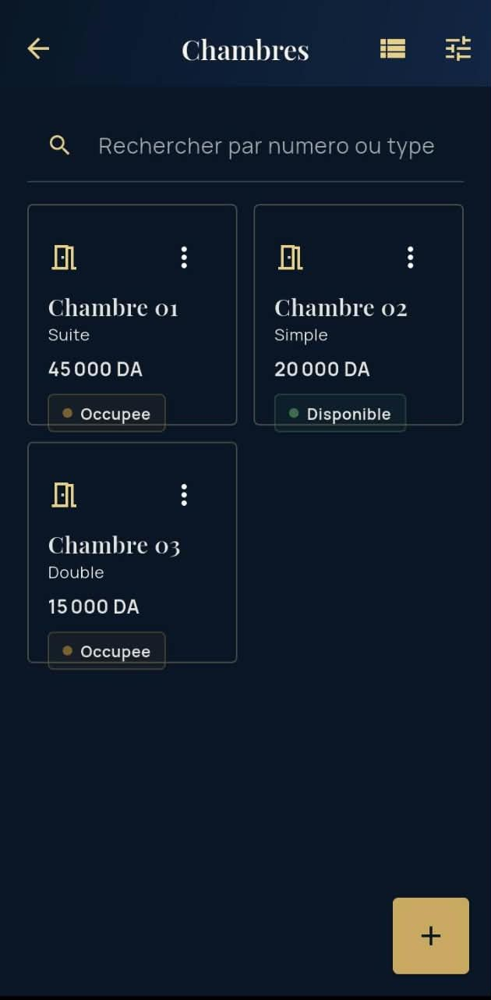
Gestion des chambres — recherche instantanée, filtres combinés (type, statut, prix) et bascule entre vue Carte et vue Liste.
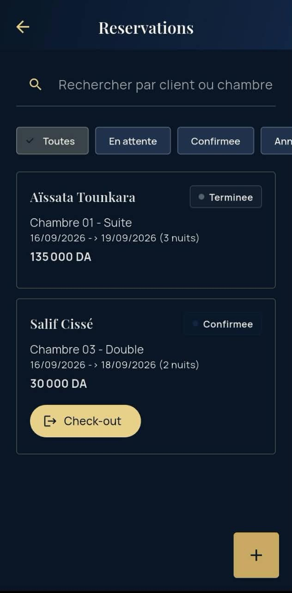
Réservations sans conflit — détection automatique des chambres disponibles pour une période donnée et calcul du montant total.
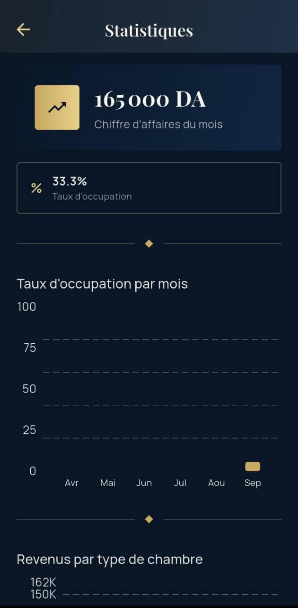
Statistiques visuelles — taux d'occupation mensuel et revenus par type de chambre, calculés à la volée depuis les données réelles (sans table dédiée).
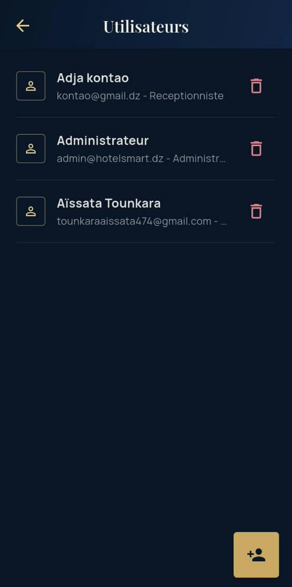
Gestion multi-rôles — création de comptes Admin / Réceptionniste / Client, avec liaison manuelle et contrôlée à une fiche client existante.
Ce chapitre vous accompagne pour votre toute première connexion à l'application, que vous soyez Administrateur, Réceptionniste ou Client.
Écran de connexion : identité bleu nuit / or, champs soulignés et motif Art Déco en arrière-plan.
admin@hotelsmart.dz — Mot de passe : Admin@123
Un compte Réceptionniste ou Client doit être créé par un Admin depuis l'écran Utilisateurs (voir chapitre 6).
Après connexion, le tableau de bord affiche un message de bienvenue, des cartes de statistiques (Admin/Réceptionniste), une grille d'accès rapide adaptée à votre rôle, et une cloche de notifications.
Le badge sur la cloche et le panneau des alertes non lues, ouvert directement depuis le tableau de bord.
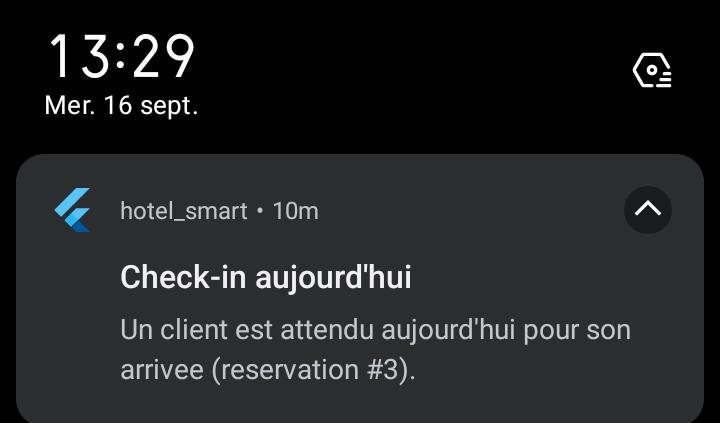
En complément, une notification système Android s'affiche automatiquement pour chaque check-in/check-out du jour, même en arrière-plan.
Accessible aux profils Administrateur et Réceptionniste.
Chaque carte affiche le numéro, le type, le prix par nuit et le statut courant (Disponible, Occupée ou Maintenance).
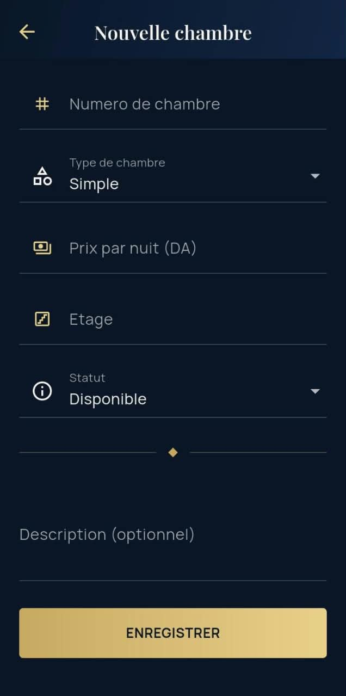
Formulaire d'ajout : numéro, type, prix, étage et statut initial sont obligatoires ; la description est optionnelle.
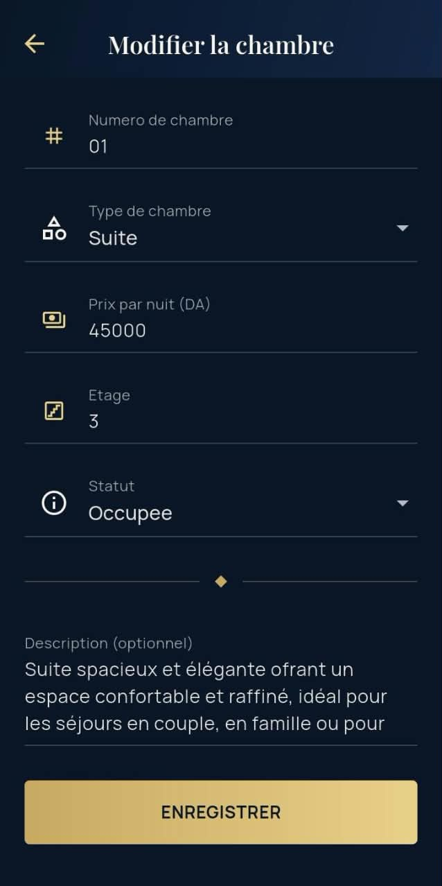
Le même formulaire, pré-rempli, permet de corriger le prix ou de changer le statut (par exemple repasser une chambre en Maintenance).
Accessible aux profils Administrateur et Réceptionniste.
Le filtre « Toutes » montre chaque réservation avec son statut coloré ; le bouton d'action affiché (Check-in ou Check-out) dépend du statut courant.
Accessible aux profils Administrateur et Réceptionniste.
Réservé au profil Administrateur.
Liste des comptes utilisateurs, avec leur rôle et l'action de suppression.
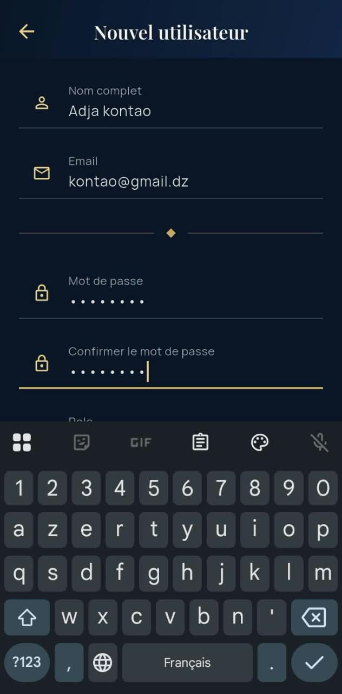
Formulaire de création : nom, email, mot de passe (avec confirmation) et rôle.
Accessible aux profils Administrateur et Réceptionniste.
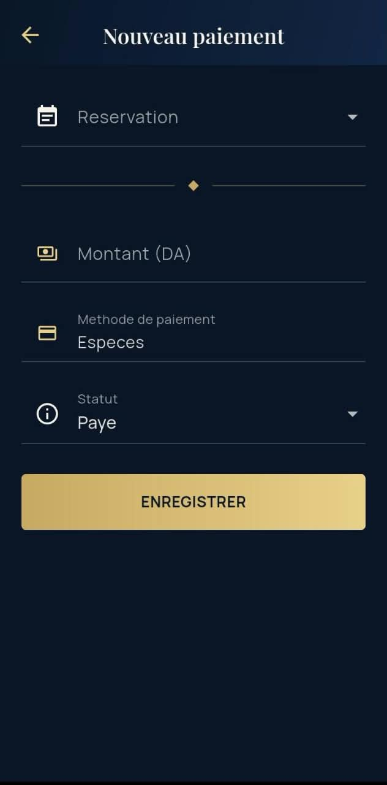
Le montant se pré-remplit avec le montant total de la réservation sélectionnée ; méthode et statut restent modifiables.
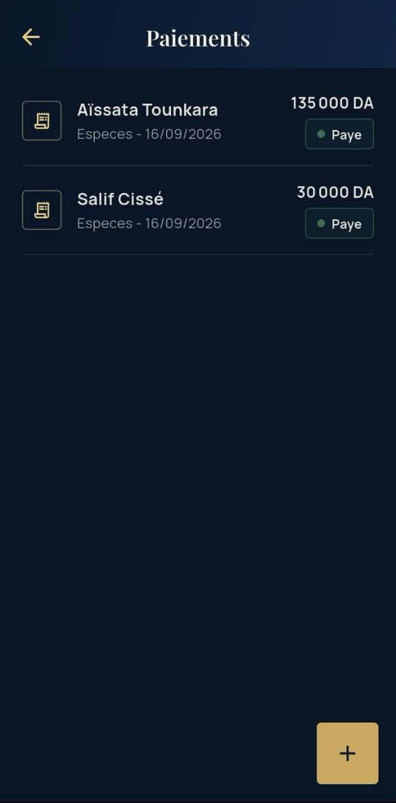
Chaque paiement affiche le client, la méthode, la date et le montant, avec un badge de statut.
Réservé au profil Administrateur.
Vue réservée au profil Client.
J'ai oublié mon mot de passe. Un Admin peut modifier votre compte depuis l'écran Utilisateurs.
Je ne peux pas supprimer une chambre ou un client. Vérifiez qu'aucune réservation active n'y est liée ; en cas de doute, contactez un Admin.
Un message « liste hors-ligne » s'affiche sur le champ nationalité. C'est normal sans connexion internet ou si le service est momentanément indisponible : une liste de secours locale (30 nationalités courantes) est utilisée automatiquement pour ne jamais bloquer la création d'un client. Appuyez sur Réessayer une fois la connexion rétablie.
Je ne reçois pas de notification de check-in/check-out. Vérifiez que la réservation concernée a bien une date d'arrivée (ou de départ) égale à aujourd'hui et que son statut est encore « En attente » (check-in) ou « Confirmée » (check-out) : une fois l'action déjà effectuée, l'alerte correspondante ne se déclenche plus.
Hotel Smart est une application mobile Flutter de gestion hôtelière conçue pour l'hôtel fictif Le Palace (4 étoiles, Alger). Elle couvre l'ensemble du cycle d'exploitation d'un établissement : chambres, clients, réservations, paiements, statistiques et utilisateurs, avec trois profils aux permissions distinctes (Administrateur, Réceptionniste, Client). L'application fonctionne intégralement hors-ligne grâce à une base de données SQLite embarquée ; seule la récupération de la liste des nationalités s'appuie sur un service externe, avec repli automatique sur une liste locale en cas d'indisponibilité réseau.
| Besoin | Choix | Justification |
|---|---|---|
| Base de données locale | sqflite | Standard Flutter pour SQLite embarqué, sans dépendance réseau |
| API externe | http + countries.dev | Peuple la liste des nationalités, avec liste de secours locale si indisponible |
| Gestion d'état | provider (ChangeNotifier) | Simple, largement adopté, suffisant pour la taille du projet |
| Design | Material Design 3 | Imposé par le cahier des charges |
| Hachage mot de passe | crypto (SHA-256) | Ne jamais stocker de mot de passe en clair |
| Session | shared_preferences | Persistance légère de l'utilisateur connecté |
| Notifications | flutter_local_notifications | Alertes check-in/check-out locales, sans backend |
| Graphiques | fl_chart | Graphiques en barres pour l'écran Statistiques |
| i18n système | flutter_localizations | Localise les widgets Material et active le RTL en arabe |
L'application suit une architecture en couches strictes :
UI (screens/widgets)
-> Providers (ChangeNotifier) : état observable par l'UI
-> Services : logique métier (peut combiner plusieurs repositories)
-> Repositories : un par table SQLite, CRUD brut
-> DatabaseHelper : Singleton, ouverture/création de la base
Cette séparation permet de tester les services et les modèles indépendamment de l'UI, et de changer la source de données sans réécrire les écrans.
lib/ ├── models/ Utilisateur, Client, Chambre, Reservation, Paiement, NotificationAlerte ├── services/ AuthService, ApiService, ReservationService, StatisticsService, NotificationService ├── repositories/ UserRepository, ClientRepository, RoomRepository, ReservationRepository, PaymentRepository, NotificationRepository ├── providers/ AuthProvider, RoomProvider, ClientProvider, ReservationProvider, PaymentProvider, │ UserProvider, StatisticsProvider, NotificationProvider, SettingsProvider ├── database/ DatabaseHelper (Singleton SQLite) ├── screens/ auth/, dashboard/, rooms/, reservations/, clients/, users/, payments/, profile/, settings/, statistics/ ├── widgets/ StatusBadge, EmptyState, confirm_dialog... ├── utils/ app_theme, constants, validators, ui_helpers, app_strings └── routes/ app_routes.dart (navigation nommée)
Utilisateur) est volontairement séparé de la fiche hôtel (Client) ; leur liaison est manuelle, effectuée par un Admin, jamais automatique.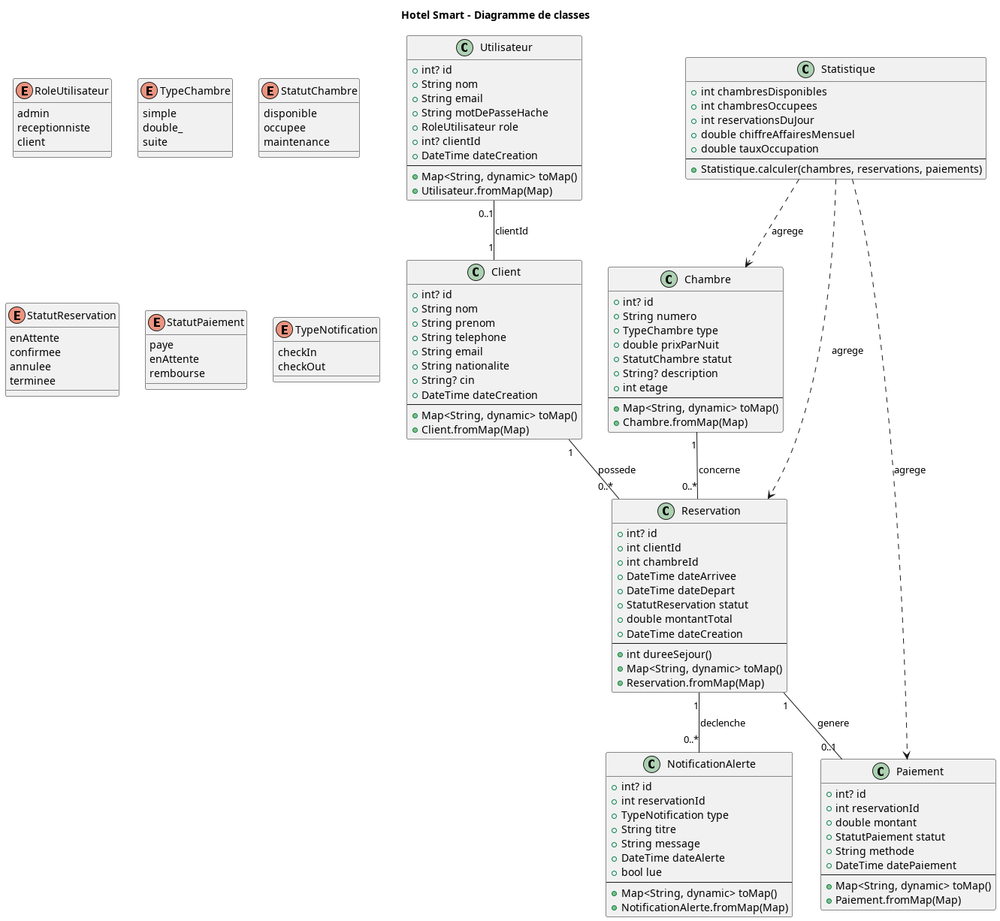
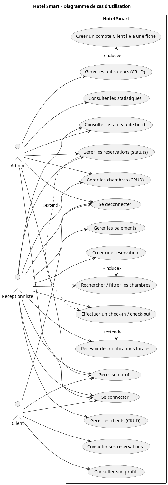
6 tables SQLite, clés étrangères actives via PRAGMA foreign_keys = ON :
users (id, nom, email UNIQUE, mot_de_passe_hache, role, client_id -> clients.id, date_creation)
clients (id, nom, prenom, telephone, email, nationalite, cin, date_creation)
rooms (id, numero UNIQUE, type, prix_par_nuit, statut, description, etage)
reservations (id, client_id -> clients.id, room_id -> rooms.id, date_arrivee,
date_depart, statut, montant_total, date_creation)
payments (id, reservation_id -> reservations.id, montant, statut, methode, date_paiement)
notifications (id, reservation_id -> reservations.id, type, titre, message, date_alerte, lue)
Suppressions en cascade : supprimer un client ou une chambre supprime les réservations liées (et donc paiements/notifications liées). Ce choix simplifie la cohérence des données pour une application de gestion mono-établissement.
Optimisation des requêtes : des index sont créés sur toutes
les clés étrangères ainsi que sur les dates de réservation
(idx_reservations_dates) afin d'accélérer les recherches de
conflits de dates et les jointures/filtrages les plus fréquents.
AuthProvider expose des getters dérivés du rôle de
l'utilisateur connecté (estAdmin, estReceptionniste,
estClient, peutGererOperations). Les écrans
utilisent ces getters pour masquer/afficher les actions, restreindre la
navigation et filtrer les données visibles.
AuthException,
ReservationException) sont affichées via des messages clairs.admin@hotelsmart.dz / Admin@123
flutter test exécute les tests unitaires (modèles, services,
validateurs) situés dans test/.
flutter analyze # 0 warning attendu flutter test # tous les tests doivent passer flutter build apk --release
admin@hotelsmart.dz / Admin@123) → tableau de bord avec statistiques dynamiques.flutter analyze sans avertissement.